Perävaunu, massat ja kytkentä
Harjoittele BE-kortin teoriaa: kysymykset selityksineen, koeharjoitus ja laskuri, joka kertoo, saatko vetää perävaunua omalla kortillasi.
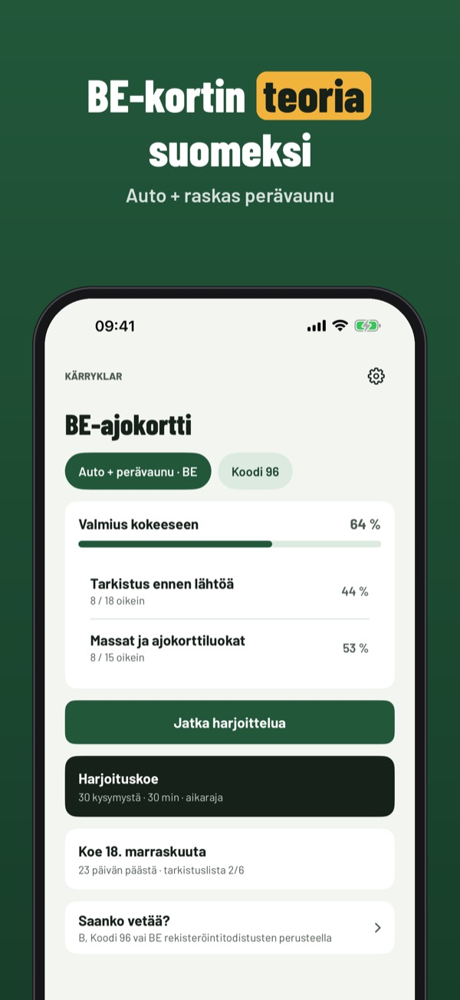
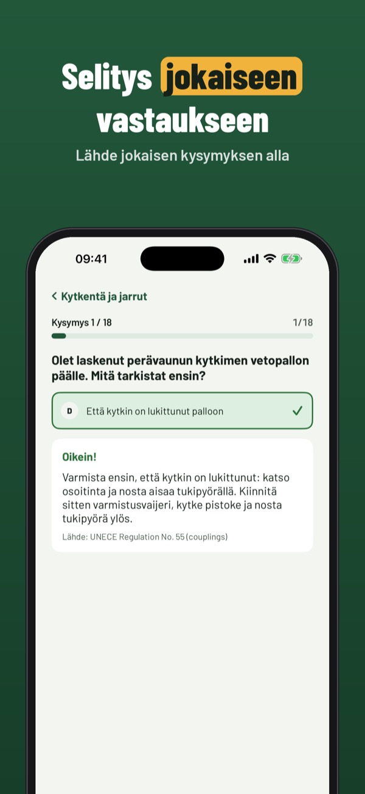
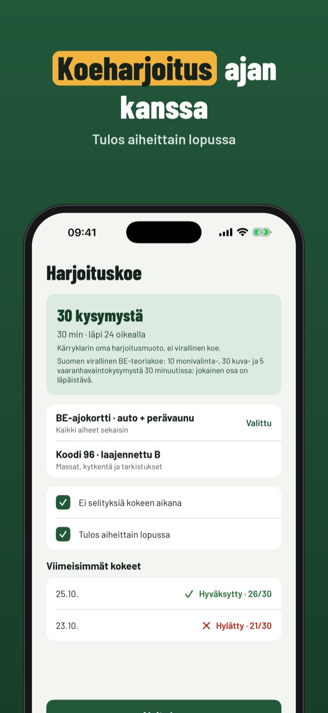
Kärryklar auttaa harjoittelemaan BE-kortin (auto + raskas perävaunu) teoriaa – ja laskee rekisteriotteen arvoista, riittääkö B, B96 vai tarvitaanko BE.
Saanko vetää? -laskuri, sanasto, tarkistuslista ja 20 kysymystä toimivat ilman ostoa. Täysi versio on kertaosto, joka avaa kaikki kysymykset, koeharjoitukset ja tilastot. Ei tilausta.
Kärryklar on itsenäinen eikä liity Traficomiin, Ajovarmaan tai poliisiin. Laskurin tulos on harjoitusapu – tarkista aina rekisteriote.
Terms of Use (EULA): https://www.apple.com/legal/internet-services/itunes/dev/stdeula/
Privacy: https://baytechbv.github.io/privacy/trailerklar-nordic/
Trailerkort og vægtberegner
Øv teorien til trailerkørekort B/E: spørgsmål med forklaring, prøveeksamen og en beregner, der viser, om du må trække traileren på dit kørekort.
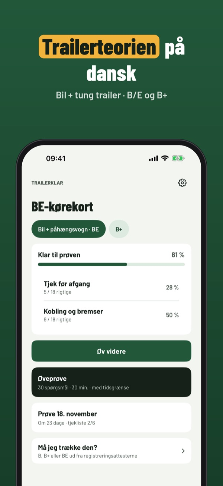
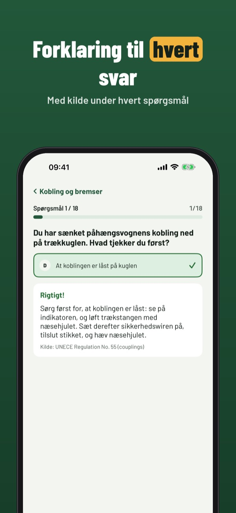
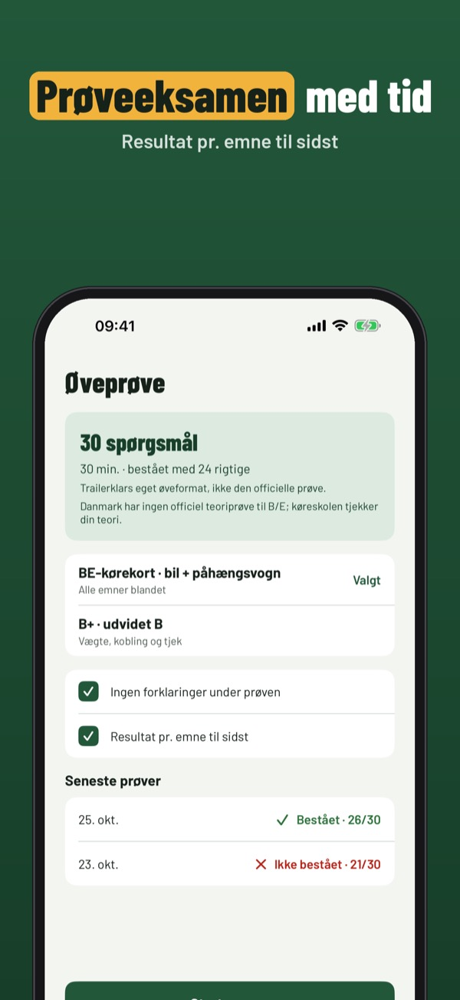
Trailerklar hjælper dig med at øve teorien til kørekort B/E (bil + tung trailer) – og regner ud fra registreringsattesten, om B, B+ eller BE er nok.
Beregneren, ordlisten, tjeklisten og 20 spørgsmål kan bruges uden køb. Den fulde version er et engangskøb, der låser alle spørgsmål, prøveeksamener og statistik op. Intet abonnement.
Trailerklar er uafhængig og ikke tilknyttet Færdselsstyrelsen eller politiet. Beregneren er en øvehjælp – tjek altid registreringsattesten.
Terms of Use (EULA): https://www.apple.com/legal/internet-services/itunes/dev/stdeula/
Privacy: https://baytechbv.github.io/privacy/trailerklar-nordic/
Släpvagn, vikter och koppling
Öva teorin för BE-körkort: frågor med förklaring, övningsprov och en kalkylator som visar om du får dra släpet med ditt körkort.
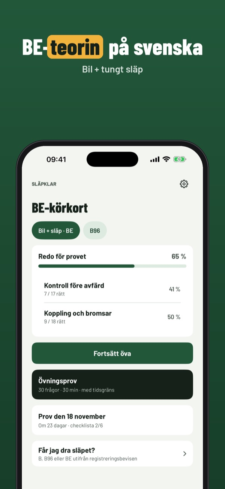
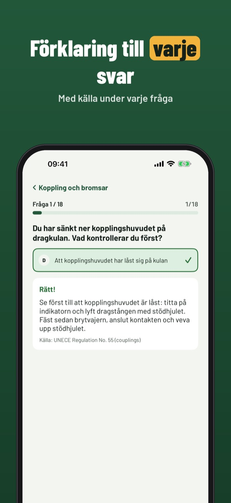
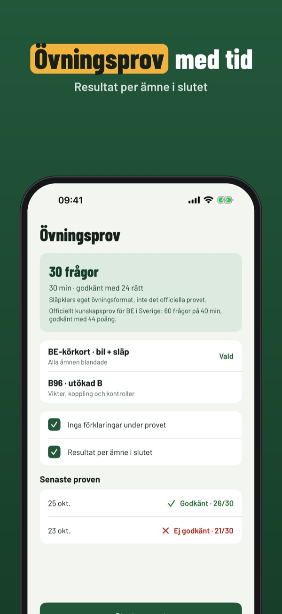
Släpklar hjälper dig att öva teorin för BE-körkort (bil + tungt släp) – och räknar utifrån registreringsbeviset ut om B, B96 eller BE räcker.
Kalkylatorn, ordlistan, checklistan och 20 frågor fungerar utan köp. Fullversionen är ett engångsköp som låser upp alla frågor, övningsprov och statistik. Ingen prenumeration.
Släpklar är fristående och inte kopplad till Trafikverket eller Transportstyrelsen. Kalkylatorn är ett övningsstöd – kontrollera alltid registreringsbeviset.
Terms of Use (EULA): https://www.apple.com/legal/internet-services/itunes/dev/stdeula/
Privacy: https://baytechbv.github.io/privacy/trailerklar-nordic/
Teori og vektkalkulator for BE
Regn ut om du kan trekke tilhengeren med førerkortet ditt – B, B96 eller BE – og øv på teori om tilhenger, kobling, last og sikring.
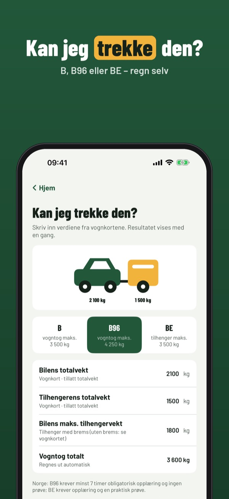
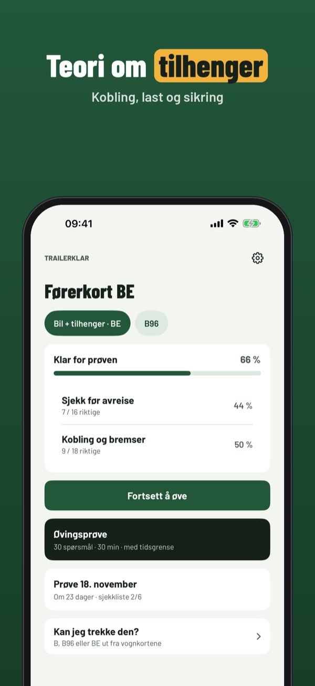
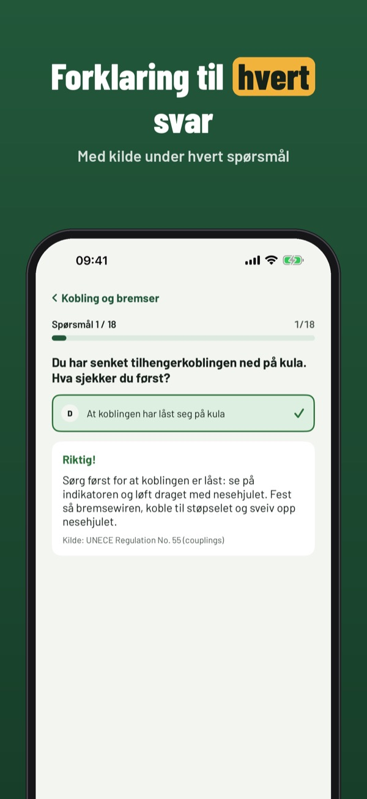
Trailerklar regner ut fra vognkortet om du kan trekke tilhengeren med klasse B, B96 eller BE – og lar deg øve på teori om tilhenger, last og kobling.
Kalkulatoren, ordlisten, sjekklisten og 20 spørsmål kan brukes uten kjøp. Fullversjonen er et engangskjøp som låser opp alle spørsmål, prøvetester og statistikk. Ingen abonnement.
Trailerklar er uavhengig og ikke tilknyttet Statens vegvesen. Kalkulatoren er en øvingshjelp – sjekk alltid vognkortet.
Terms of Use (EULA): https://www.apple.com/legal/internet-services/itunes/dev/stdeula/
Privacy: https://baytechbv.github.io/privacy/trailerklar-nordic/